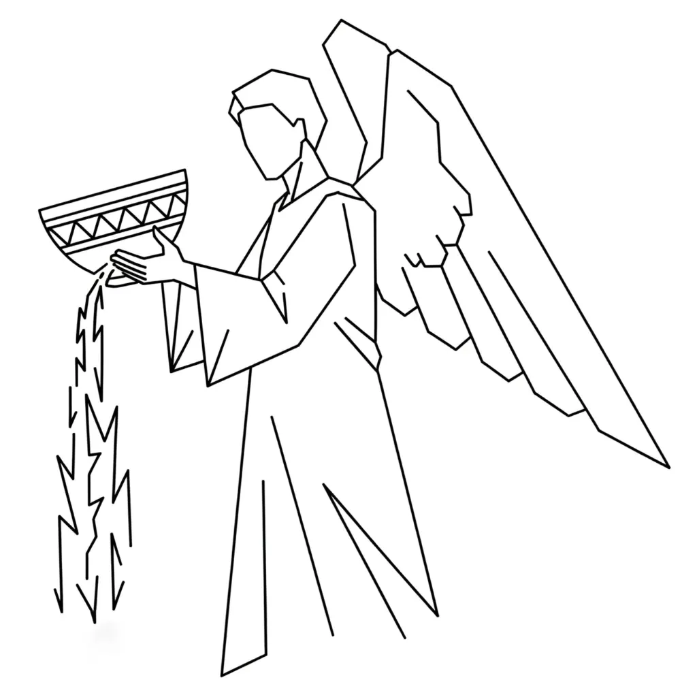

The Book of Revelation has often been treated as a forecast of world-ending catastrophes, yet its very title, Apokalypsis, means “unveiling.” It is not so much a tale of destruction as it is a symbolic drama of consciousness, stripping away one ruling power after another until the final truth is revealed: the union of God and man.
The Opening Vision
The drama begins with John’s vision of the risen Christ, shining as Alpha and Omega — the beginning and the end. This initial moment is not about outer spectacle but the realisation that everything begins and ends in the awareness of “I AM.” John is instructed to write letters to seven churches. These churches represent not congregations in ancient cities but seven conditions of the inner life: states of devotion, compromise, distraction, and faith. Some are commended, others are warned, but all reflect aspects of the individual psyche that must be examined. Before anything can be revealed, the foundation of consciousness itself must be brought into focus. The unveiling begins with this recognition of the indwelling Christ as the true source (Revelation 1–3).
The Seals and the Scroll
John is then shown a scroll in the right hand of the One seated on the throne. It is sealed seven times, hidden from view, and no one can open it except the Lamb. The Lamb represents imagination sacrificed — the creative power that appears powerless in the eyes of the world yet is the only force able to unveil life’s meaning. When the seals are broken, the horsemen emerge: conquest, war, famine, and death. These are not forces riding across continents but inner experiences of desire and frustration, striving and collapse. Each horse reveals another cycle of states that rule and then fade. The act of opening the seals is the shattering of illusions, the tearing away of appearances that once seemed immovable. The scroll of life can only be read when these surface layers are removed, for the hidden truth lies beneath (Revelation 4–7).
The Trumpets Sound
Next come the seven trumpets, each one a blast that shakes another structure. Trumpets in scripture symbolise alarm and awakening, and here they strip away reliances on the external: the stability of nature, the security of wealth, the appearance of worldly power. Each trumpet declares that what seemed fixed can be overturned in a moment. At the centre of this drama stand two witnesses, who testify to the truth within. They are rejected, mocked, even slain, but they rise again after three days. This is the inner witness that cannot be extinguished — the certainty that imagination holds life even when appearances deny it. The final trumpet sounds, and the announcement is made:
“The kingdoms of this world are become the kingdom of our Lord.”
In other words, the dominion of appearances collapses into the reality of inner rule. The unveiling continues by replacing outer authorities with inner sovereignty (Revelation 8–11).
The Cosmic Drama
The narrative shifts to cosmic imagery. A woman clothed with the sun appears, travailing in birth. This woman symbolises the desire within you that is about to be born into form. Against her stands the great dragon, the embodiment of resistance — the old self that refuses to yield its throne. Out of this conflict arises the beast from the sea and the false prophet, figures demanding worship and obedience. They are the sense-world enthroned, insisting that reality is only what can be measured, bought, or enforced. Yet in contrast stands the Lamb with the 144,000 sealed upon Mount Zion. These are not literal numbers but symbols of completion and wholeness. They represent those who no longer give allegiance to appearances but carry the mark of imagination realised. The cosmic struggle is not in the stars but in consciousness itself: the war between the birthing of new awareness and the powers of the old state (Revelation 12–14).
The Fall of Babylon
From here the vision intensifies with the pouring out of the seven bowls of wrath. These bowls are not punishments from an angry deity but outpourings of truth, dissolving the falsehoods of the old order. Babylon, the great city, is judged and destroyed. Babylon represents the world of appearances, the belief that the external controls the internal. It is the system of thought that enslaves the imagination by chaining it to the evidence of the senses. When Babylon falls, the kings of the earth and the merchants lament her destruction, for they have profited from her dominion. In consciousness, this is the collapse of fear, dependence, and outward reliance. What seemed permanent is exposed as fragile, and the inner self is freed from its illusions (Revelation 15–18).
Victory of the Lamb
After the fall of Babylon, the scene turns to celebration. The marriage supper of the Lamb is proclaimed, the union of imagination and desire. This is the joining that produces manifestation — the wedding of the inner and outer, the invisible and the visible. A rider on a white horse appears, crowned with many crowns. This figure is imagination victorious, crowned with the fulfilment of many states. The beast and false prophet are cast into fire; appearances and outward authorities lose their hold. Even Satan, the accuser, the whisper of self-doubt, is bound and silenced for a thousand years. This binding symbolises the quieting of inner resistance. The accusing voice is no longer able to dominate. In this victory, the power of imagination is enthroned openly (Revelation 19–20).
The New Heaven and New Earth
The drama culminates with the vision of a new heaven and new earth. The first heaven and the first earth pass away, meaning the old way of perceiving reality is gone. The New Jerusalem descends, not as a literal city but as the perfected state of consciousness. In this new order there is no temple, for God and man are one; no sun or moon, for inner light illumines all; no night, for the shadow of ignorance is gone. A river of life flows from the throne, nourishing the tree of life which bears fruit continuously, symbolising perpetual creativity. The vision closes with invitation: “Come.” The unveiling is never final, for each new desire initiates the cycle again — death of the old, resistance, and resurrection into new life. Revelation ends as it began: an inner unveiling, a drama that repeats whenever imagination rises into fulfilment (Revelation 21–22).